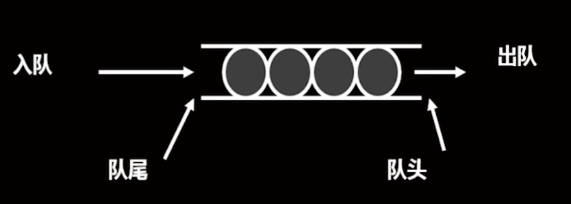

类与动态内存分配
静态数据成员
定义：整个类所有类共享的变量
声明：成员前加保留词static
说明：
静态数据成员不属于对象的一部分，而是类的一部分；
定义对象时并不为静态成员分配空间
实现：静态成员的定义一般出现在类的实现文件
引用：通过作用域操作符直接调用或从对象引用它
class::rate | obj.rate
静态成员函数
定义：专门处理静态数据成员，不能处理其他数据成员的函数
声明：在类定义中的函数原型前加保留词static
说明：
静态成员函数没有this指针
静态成员函数可以在不定义对象的情况下进行调用
调用：通过作用域操作符直接调用或从对象引用它
队列
定义：一种特殊的线性表，插入在表尾，删除在表头
图示：
 队列类
类型属性：可以储存一系列项，队列中的项目数有一定限制
类型操作：初始化队列为空；确定队列为空；确定队列已满；确定队列中的项数；在队列末尾添加项； 删除队列开头项；清空队列
类的继承
定义：在一个（单继承）或多个（多继承）已有类的基础上，扩展属性或方法，形成一个更强大的类
基类 <- 派生类 : 公有派生；保护派生；私有派生
单继承格式
class derived_class: inherited_method base_class{} #include <iostream> #include <string> // base_class class Book { protected: std::string title; std::string author; public: Book(const std::string &title, const std::string &author) : title(title), author(author) {} virtual void display() const { std::cout << "Book: \"" << title << "\" by " << author << std::endl; } virtual ~Book() {} // 虚析构函数，确保正确的析构派生类对象 }; // inherited_class class AudioBook : public Book { private: std::string narrator; public: AudioBook(const std::string &title, const std::string &author, const std::string &narrator) : Book(title, author), narrator(narrator) {} void display() const override { std::cout << "Audio Book: \"" << title << "\" by " << author; std::cout << ", narrated by " << narrator << std::endl; } };
Last modified: 11 十二月 2023